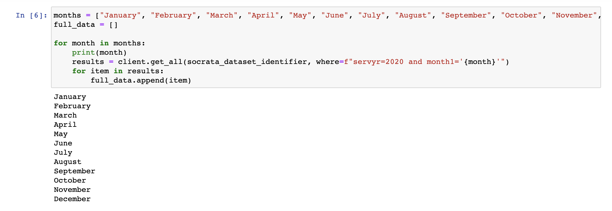
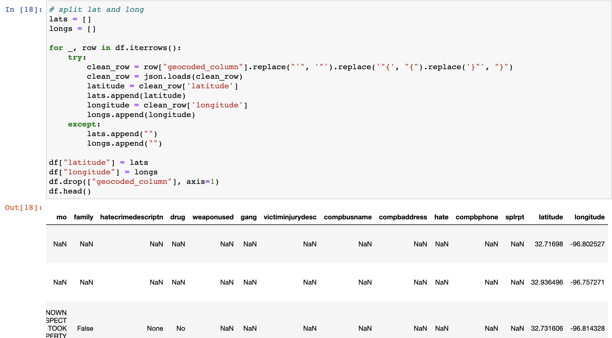
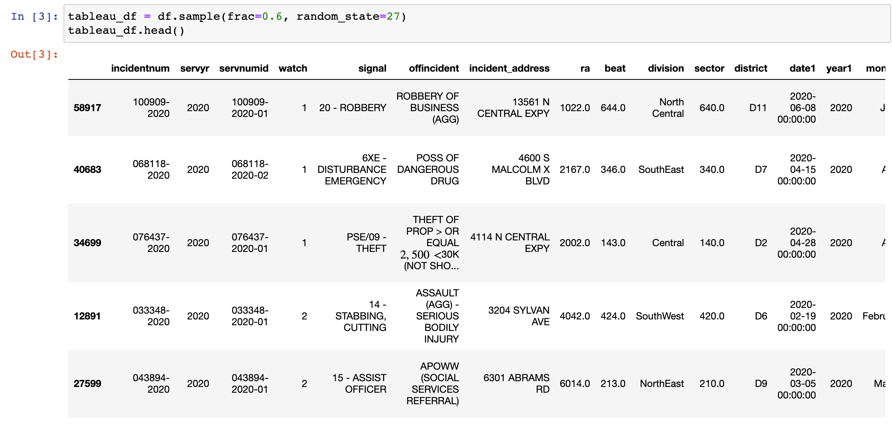
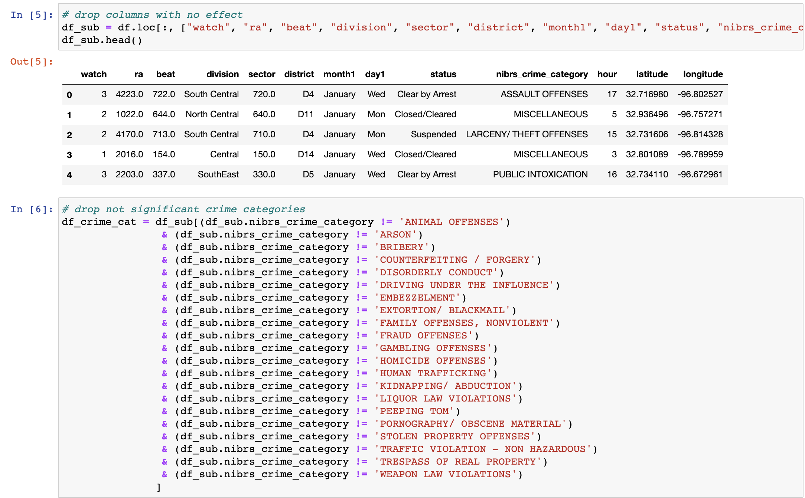
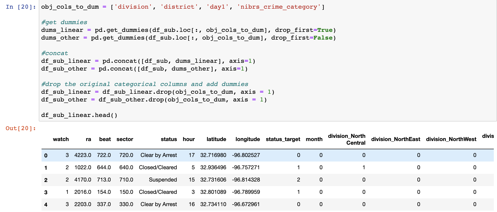
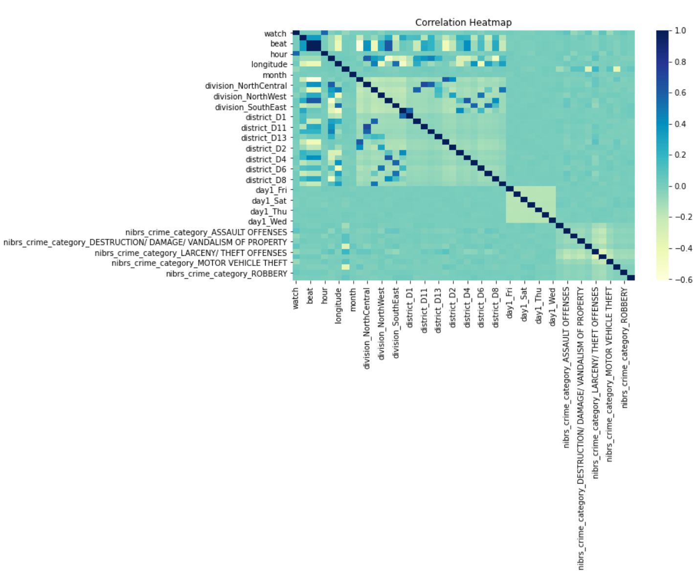

We sourced our data from the Police Incident dataset on the Dallas Open Data API website.
Data Gathering
 We chose to analyze the Police Incident Dataset as it is rich with information regarding each incident that is called into 911 for police attention. This dataset provided the date and time, location information, demographic information, and type of incident in addition to much more detail within each of these categories.
This dataset has its own API that we used. Because the API only allows for 1000 incidents to be reviewed at one time, we first gathered all of the incidents recorded for 2020 by looping through each month in the API. We then saved all of those incidents for 2020 to a CSV to explore and clean for our data analysis and modeling.
Data Cleaning
 Pulling all of the Police incidents recorded for 2020, provided us with a very large dataset so we started by cleaning the data. We first cleaned the columns in which we were interested in separating the data within them. For example, the API provided a geocoded column of the latitude and longitude for each incident and we wanted to separate those into their own columns for further analysis.
We changed all columns of strings to columns of date times that provided us with date, day, year, and time information. We also cleaned the columns with discrepancies in reporting. For example, some districts reported had D in front of the district number while some only reported the number. We added the D in front of all districts to standardize. We dropped all zip codes that did not correspond to actual city of Dallas zip codes. The API provided zip codes within Dallas County as a whole and some that were incorrect due to input error; therefore, we removed those. We also dropped the status columns that were not significant such as “L”, “Returned for Correction,” and “Open” in addition to dropping all nulls provided for this column.
Data Manipulation for Tableau
Based on all of the cleaning techniques we performed, we utilized a subset of this data of our Tableau visualizations. After the aforementioned cleaning, our dataset was still larger than allowed for Tableau; therefore, we took a random subset of 0.6 of the dataset to be used with Tableau.
Feature Engineering for Machine Learning Modeling
 To prepare our dataset for machine learning modeling, we feature engineered columns. We dropped insignificant columns and insignificant categories within the nibrs_crime_category column. This column provides the kind of crime as reported by the NIBRS classification system that police units use. We only used the columns that were coded to be classified within this classification system and took out all of those categories not listed here. These other values were an insignificant portion of the overall dataset at only 4% of the total data.
 After this, we label-encoded our target of status and the month column. In addition, we dummified our string columns of “division,” “district,” “day1”, and “nibrs_crime_category.” We then analyzed our linear and tree-based correlations based on our features. The label and one-hot encoding we performed on for features, provided a lot of additional categories so when we looked at our correlations, we took a subset of these correlating features to use for our machine learning model. We saved the linear and tree-based correlations to their own data sets that we ran through our machine learning model.
Correlations
 The label and one-hot encoding we performed on for features, provided a lot of additional columns for our dataset so investigated our correlations. We took a subset of the correlations with the largest correlating factors as displayed in the Correlation Heatmap. We removed the feature categories with low correlations, leaving us with the categories of: Watch, Hour, Division, District, Month, Day, Crime Category, Hour, and Latitude, which are the finalized feature categories that we ran through our Machine Learning Model.
Machine Learning
We ran our data using the classification models, but we saw that our model was overfitting the data. The model was overlooking our second class of target status of “Closed/Cleared.” To counter this, we decided to use two machine learning models. The first model determines the probability of whether or not our target status ended in suspended or not suspended. Our second model then took the not suspended incidents to predict the probability that the incident either ended in arrest or ended in the incident being closed or cleared.
Model 1: XG Boost Classifier
The X-treme Gradient Boost Classifier was the model that we chose to predict the probability of our data for Model 1. It did not overfit the data and it had the highest accuracy, F-1 and AUC scores.
Model 2: XG Boost Classifier
We also chose to use The X-treme Gradient Boost Classifier to predict the probability of Model 2. It did not overfit the data and it had the highest accuracy, F-1 and AUC scores.
Feature Importances
We also investigated the feature importances of each of these models to determine what, if any features played a greater role in predicting status outcomes.
Model 1
The feature importances of Model 1 when determining whether or not an incident ends in suspension is heavily influenced by various crime categories overall.
Model 2
The feature importances of Models 2, in which we determine whether an incident ends in an arrest or a clearance, is heavily weighted by the Crime Category: Miscellaneous at approximately 78%. Therefore, we have excluded that category to show the other contributing factors and their weights respectively.